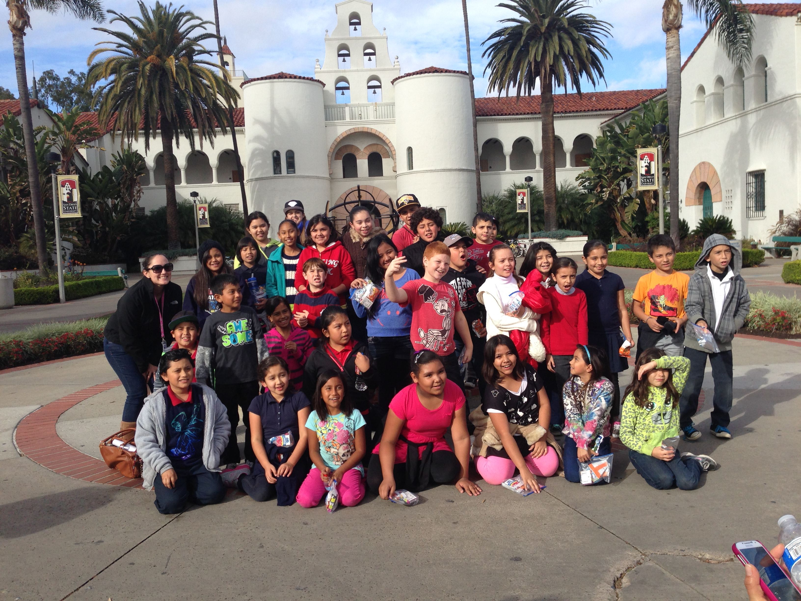

Barrio Logan College Institute is based out of San Diego, CA and they help students primarily from a Latino background with their studies and motivating them to go onto college. One of the programs I helped with was in the summers and they had 3 groups of students from different grade levels. They took an online math course that counted for credit and helped them get ahead to possibly take more challenging courses. These students came for low socioeconomic backgrounds and most have to deal with issues outside of school. Here I would help with tutoring and trying to connect with them and also be an example for them. The fact that they saw other brown skinned people going to college and some of the best colleges in the world, was something we wanted them to notice so they can envision themselves were we are in a couple of years and for some next year. They also took the student to various universities like Cal State San Diego, University of San Diego, UC San Diego, Cal State San Marcos, and many others in northern California. Here I just hope that I was able to connect with them enough to motivate them go to college, to not settle, and to get them more comfortable with the idea of going to college.
<
